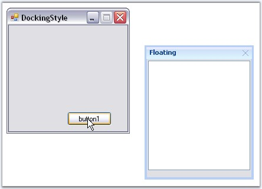
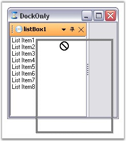

Floating a Control
The FloatControl method enables the end users to float a particular control. Using this method, we can float a single control even if it is tabbed with many controls.
|
[C#]
Rectangle rcfrm = this.Bounds; this.dockingManager.FloatControl(this.listBox1, new Rectangle(rcfrm.Right+25,rcfrm.Bottom-150,175,200)); |
|
[VB.NET]
Dim rcfrm As Rectangle = Me.Bounds Me.dockingManager.FloatControl(Me.listBox1, New Rectangle(rcfrm.Right+25,rcfrm.Bottom-150,175,200)) |

Figure 50: DockedControl set to Float
DisallowFloating
By enabling the DisallowFloating property, a control can be dragged and redocked to the host form, but cannot be floated.
|
DockingManager Property |
Description |
|
DisallowFloating |
Property which sets value indicating whether the docked controls are allowed to float or not. |
|
[C#]
this.dockingManager1.DisallowFloating = true; |
|
[VB.NET]
Me.dockingManager1.DisallowFloating = True |

Figure 51: DragProviderStyle="Standard" FloatingOnly = "True"
A sample which demonstrates DisallowFloating property is available in the below sample installation path.
..My Documents\Syncfusion\EssentialStudio\Version Number\Windows\Tools.Windows\Samples\2.0\Docking Package\WindowFill
Floating State to Docking State and Vice Versa
Setting EnableDoubleClickOnCaption property to true, lets you dock or float the control by just double clicking on the captions of the docked control. By default it is true.
See Also
Nested Docking and Floating, How to make a docked control Floating Only?,
How to float a single control even if it is tabbed to many controls?, How to find out whether a docked control is floating or not?,